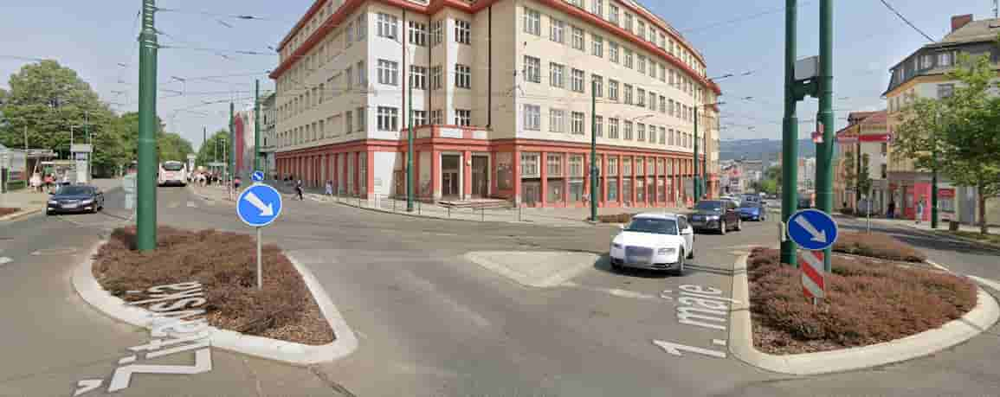

Ahoj, vítej v mé Webgame
Tvým cílem je dostat se k legendární harcovské přehradě, pode mnou se nachází příběh, který číst nemusíš, můžeš se rovnout vrhnout do hry.
Ovládání je jednoduché, stačí klikat na obrázky kam se chceš vydat.
Přijel si do Liberce vlakem, byla to několikahodinová cesta vlakem od Českých drach.
Jakmile vylezeš z vlaku tak hledáš nejkratší možnou cestu ven. Tato cesta tě zavedla někam do podzemí, ale chodí spousty lidí ale spíše směrem proti tobě.
Nakonec však spatříš světlo na konci tunelu a to doslova, jsou tam schody k východu. Když jsi tyto schody vyšplhal vše ti došlo. Ty jsi šel tunelem který vede od hlavního vchodu.
No co už, aspoň jsi našel stánek s kávou, tak si rychle koupíš jednou na cestu a už jdeš z nádraží ven. Před tebou se nyní nachází několik cest, kterou se vydáš?

Půjdu na zasávku MHD.
Půjdu dolů z kopce.